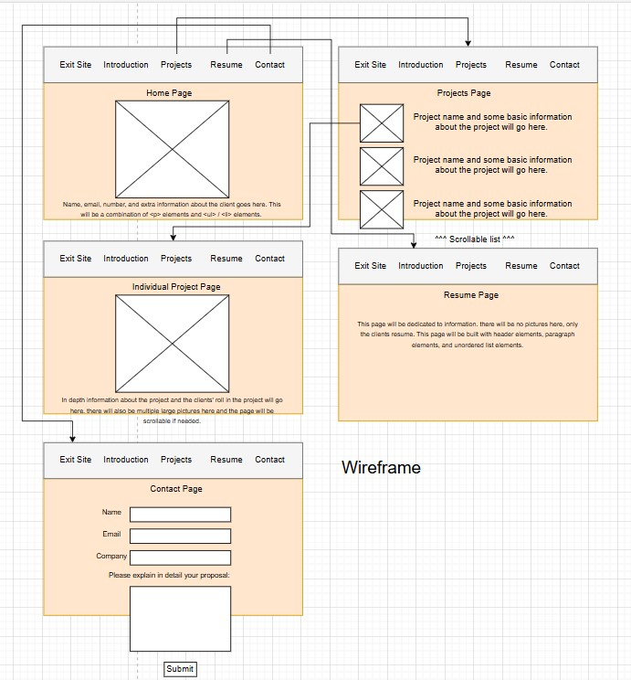
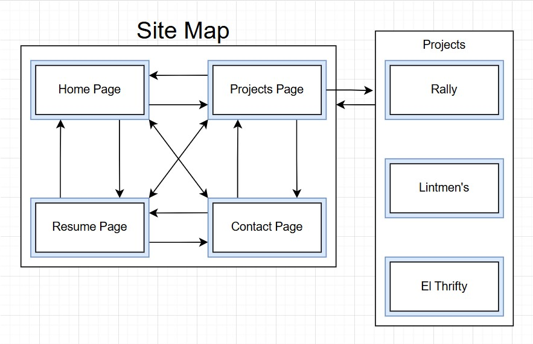

Project Overview
Application and its purpose:
This website will essentially be a work portfolio for the client. The website will show off the different work related projects the client was involved with. Additionally, this website will include the client's resume and a contact form if the user is looking to contract a construction company for a job.
Intended users of the website:
The intended users are the client, the clients’ higher ups, and potential hiring agents looking for work experience, resume, etc on the client.
Overview of the content:
The first page, Home Page, Will include basic information on the owner/client. Picture, name, email, etc. The next page, Projects, will be a scrollable vertical list of the clients' different projects, seeing as how this website will essentially be a portfolio. The list will be formatted as each listing having a small image that will have a small javascript function to “animate” the image when hovering over it. There will also be basic information on each individual project. The next page, (individual project pages), will have enlarged photos, more photos of the project and detailed information about the project and the clients’ participation in said project. The next page, Resume Page, will include the clients resume. Finally, the Contact Page, will include a contact form for the user to fill out if they are interested in contracting the construction of a commercial building through Liles construction company.
Client Information:
Name - David Nickel
Associated Business - Liles Construction
Valid Email - david.nickel415@gmail.com
Phone Number - [Redacted]
Wireframe:
Client Project Wireframe
Site Map:
Client Project Site Map
Pages:
- Name - index.html
- Purpose - Introduce client
- Audience/Users - Client, clients’ higher ups, and potential hiring agents.
- Content - Image of client, name, email, additional information about client specifically.
- Input Data - This page will NOT ask users to input data.
- Input Validation - NO input data.
- Button/Hyperlinks/Dropdowns - Hyperlinks will be included at the top for navigation. NO buttons, NO dropdowns.
- Actions - The only interaction on this page will be hyperlinks at the top for navigation.
- Specific Notes - None.
Home Page
- Name - projects.html
- Purpose - Provide a list of clients’ projects
- Audience/Users - Client, clients’ higher ups, and potential hiring agents.
- Content - For each project there will be an image, project name, basic project information.
- Input Data - This page will NOT ask users to input data.
- Input Validation - NO input data.
- Button/Hyperlinks/Dropdowns - Hyperlinks will be included at the top for navigation. Each project section will essentially be a clickable button. NO dropdowns.
- Actions - There will be hyperlinks at the top for navigation and each project is clickable and will navigate the user to a different page. This page includes java script interaction in the form of hovering over each image to zoom in.
- Specific Notes - None.
Projects Page
- Name - projectname.html
- Purpose - Provide additional information & pictures for the specified project.
- Audience/Users - Client, clients’ higher ups, and potential hiring agents.
- Content - Large images of project, detailed information on project and clients’ roll in said project.
- Input Data - This page will NOT ask users to input data.
- Input Validation - NO input data.
- Button/Hyperlinks/Dropdowns - Hyperlinks will be included at the top for navigation. NO buttons, NO dropdowns.
- Actions - The only interaction on this page will be hyperlinks at the top for navigation.
- Specific Notes - None.
Individual Project Pages (3 in total, more can be added in the future per the client's request)
- Name - resume.html
- Purpose - Show off clients work experience.
- Audience/Users - Client, clients’ higher ups, and potential hiring agents.
- Content - Clients’ detailed resume including their work experience.
- Input Data - This page will NOT ask users to input data.
- Input Validation - NO input data.
- Button/Hyperlinks/Dropdowns - Hyperlinks will be included at the top for navigation. NO buttons, NO dropdowns.
- Actions - The only interaction on this page will be hyperlinks at the top for navigation.
- Specific Notes - None.
Resume Page
- Name - contact_form.html
- Purpose - Collect user information
- Audience/Users - Client, clients’ higher ups, and potential hiring agents.
- Content - Interactable form for the user to fill out and submit if they are interested in contracting Liles Construction.
- Input Data - This page will allow the user to input information including name, email, company if applicable, and a text input box to explain their reason for contact.
- Input Validation - The listed fields are required: name, email, and text input of at least 50 characters.
- Button/Hyperlinks/Dropdowns - Hyperlinks will be included at the top for navigation. Submit button at bottom of form. NO dropdowns.
- Actions - There will be hyperlinks at the top for navigation, text fields for name, email, company, and explanation, and a submit button.
- Specific Notes - None.
Contact Page
Dynamic Functionality on the website:
For my java script functionality I went for more quality of life rather than core functionality as this website didn’t really need javascript to function. In the “Projects” page, there is a scrollable list of my clients' different projects that they have done. Originally, you just had to click the tiny name which is a link and that would redirect you to another page. However, I thought that was a bit dull and there are plenty of websites where upon clicking the image of something, you would also be redirected somewhere. So I made the images clickable links. But they didn’t look clickable, So that is where the javascript came in. I added an event listener of when the user hovers/unhovers their mouse over the image, and in turn the image will pop up and become a little larger until they move their mouse away. This makes sure that the user will know that the images are interactable and clickable. I drew my inspiration for clickable images from places like amazon. As for the small animations if you will, I drew my inspiration from places like youtube where some sort of interaction happens when you hover over a video thumbnail, making it clear that you can click it. In Youtube’s case, it starts to play the beginning of the video. Obviously, my site does not have videos so there is no autoplay. Just a mini zoom function. It turned out pretty well.